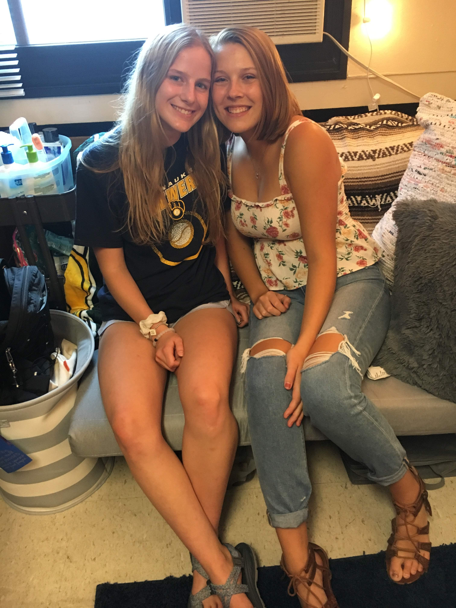
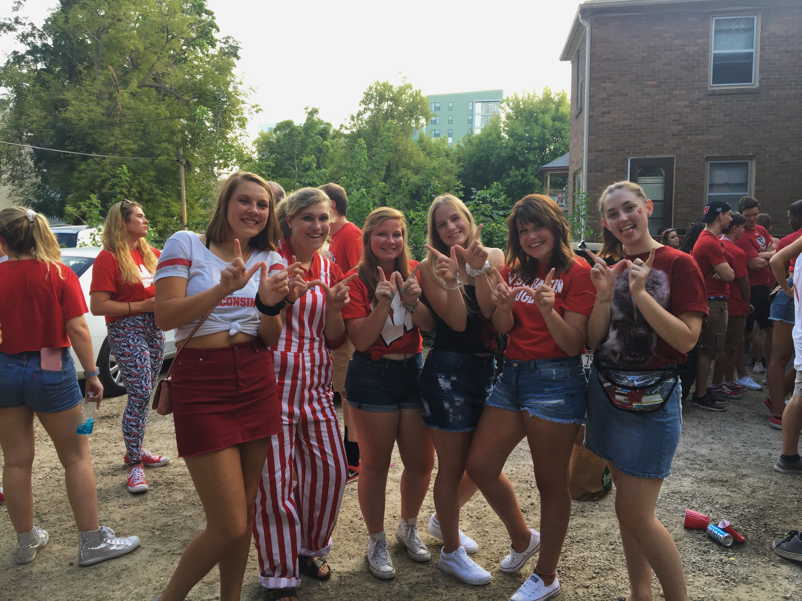
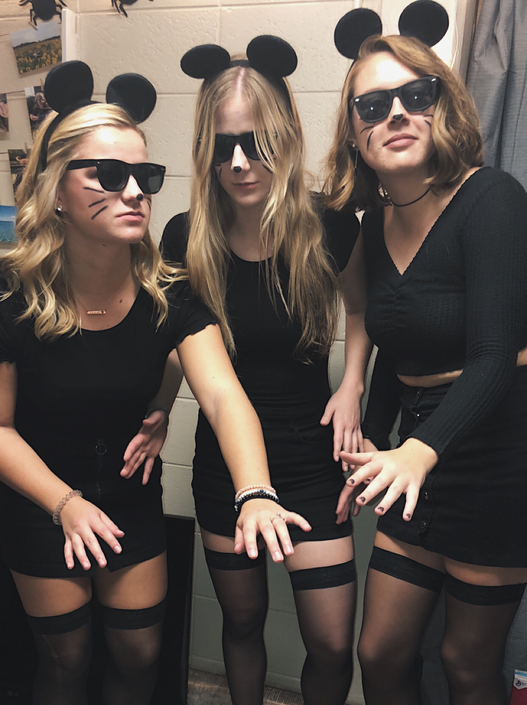
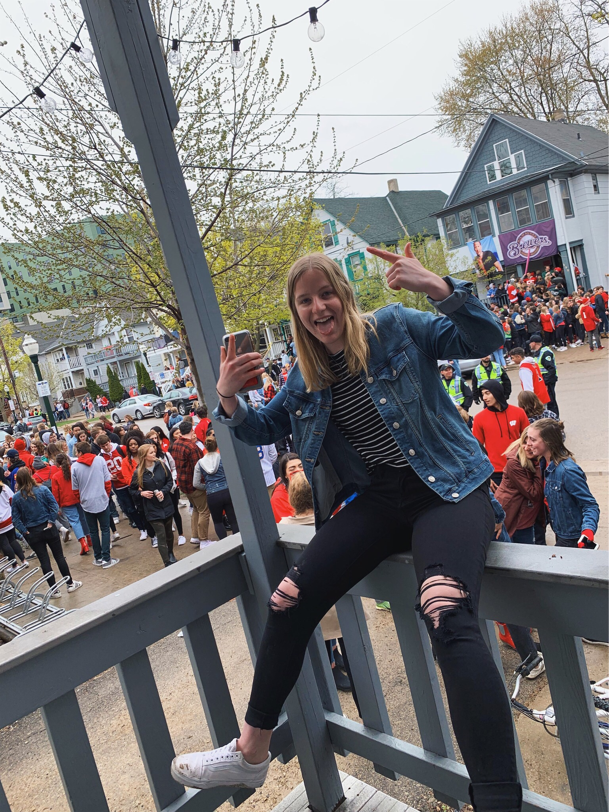

This is the first picture I took after moving into my dorm in Witte Hall with my roommate, Kennedy
Here are my friends and I at our first tailgate! It was a night game vs Western Kentucky.
For Halloween, my friends and I went as three blind mice.
After Winter Break, we all went sledding down the Observatory Drive hill on the dining hall trays!

Madison and I went to go see Bryce Vine at Majestic Theatre!

This is me at my first Mifflin Block party!
